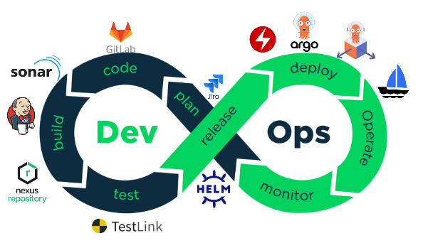
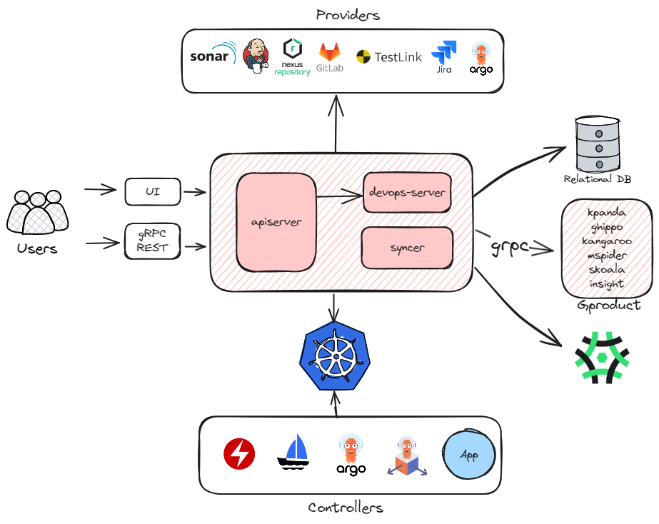
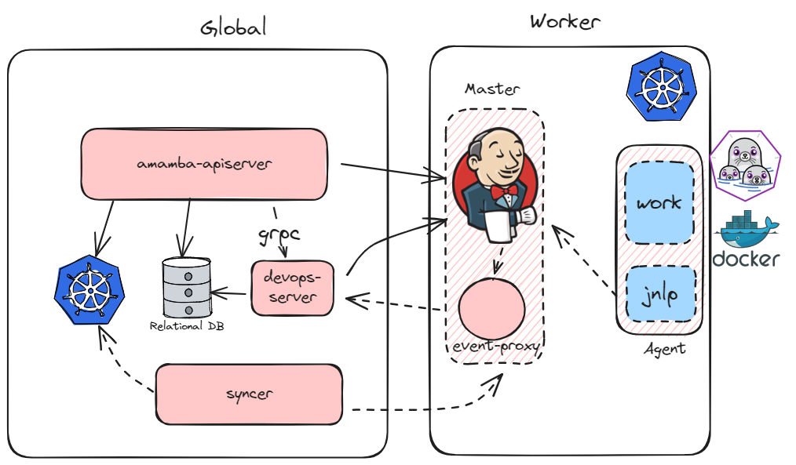
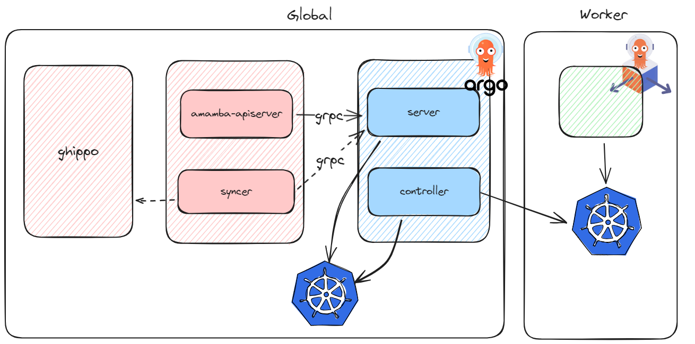
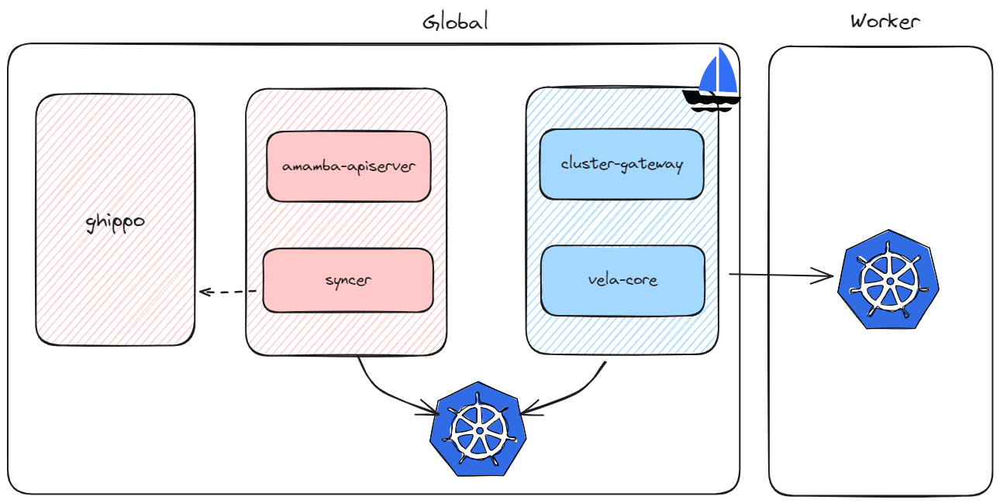

应用工作台技术概览¶
目标¶
- 对应用工作台架构有个整体认识
- 说明包含组件及集成方式
- 示例及引导文档

系统组件¶
amamba-system 主要包含以下三个组件
- apiserver：所有服务的入口，无状态的，提供 gRPC 和 REST 两种方式访问，通过 REST 或 gRPC
调用
Providers的服务，或者通过 kube-client 或者 kpanda 创建资源与Controllers交互 - devops-server：主要与 Jenkins 通信，并向
apiserver提供相关接口以支持懒加载，基于事件的同步等功能 - syncer：主要负责维护
Providers和Controllers的数据与系统的保持一致，确保系统的配置能正确地下发到各个组件当中

CI¶
Jenkins¶
Amamba Jenkins 基于 kubernetes 插件增强，相比于原生的 Jenkins 我们提供了以下优势：
-
完整的云原生解决方案
相比于传统的 VM 部署，云原生有着弹性和可伸缩性、高可用和灵活等优点，我们提供了整套的 Jenkins 云原生方案， 包括在 Kubernetes 中运行、构建镜像和制品、发布、和其他工具链集成、DR 等；
-
优化的读取速度
我们提供了基于关系型数据库的缓存，流水线及运行相关的数据都存储在 DB 里，并通过事件机制保证数据及时更新。
-
一次创建，多处运行
得益于 DB，Jenkins 的部署位置和持久化不再重要，我们时刻可以接入另一套集群中部署的 Jenkins，并在上面运行之前创建的流水线；
-
更低的门槛
Jenkinsfile 强大但有着比较高的理解和使用门槛，我们提供了图形化界面以拖拉拽的方式帮助用户创建和编辑流水线，帮助用户更快地上手；
-
多租户
基于 DCE5 的 Workspace 机制，我们对流水线和凭证做了隔离；
此外，目前应用工作台也有着以下问题：
-
启动慢
相比于传统的使用注册节点的 Agent，在基于 Kubernetes 的 Jenkins 上运行流水线需要创建 Pod、等待调度和拉取镜像，这一过程导致启动的速度相对来说要更慢。
-
缓存
由于 Pod 的沙箱环境，使得缓存无法被有效利用，我们可以为其挂载持久化存储，但这几乎总是意味着额外的规划和管理成本；
-
插件
安装插件依然需要到 Jenkins 的管理界面上操作和配置，并且当迁移到其他集群上时会丢失。 我们建议通过 fork amamba-io/jenkins-agent 并修改
formula.yaml后重新构建的方式，将插件持久化到镜像中； -
Noisy Neighbour
我们没有对流水线做资源的配额和限制，因为我们认为 CI 和部署的资源不应该放在一起考虑， 而是依赖于管理员对 CI 系统的前期规划，但这可能导致部分流水线抢占所有资源；
-
构建镜像慢
除了前面说的缓存无法被有效利用的原因外，当 Kubernetes 的运行时不是 Dockerd 时，我们只能使用类似 dind 或 pind 的方式来构建镜像， 这种在容器里面运行容器的方式会导致一部分 IO 性能损失；
基于此，我们也在计划支持使用传统方式部署的 Jenkins。
整体架构¶

- 利用 Generic Event 插件提供的事件机制，
我们可以及时地更新流水线的运行情况。为了避免不同网络环境带来的事件丢失的干扰，
我们以 sidecar 的方式部署了
event-proxy，这一组件提供更强的网络流量控制能力和可靠的事件系统。 当然，对于 Amamba 来说它是完全透明的，如果网络环境可控，可以不部署它； - 为了保证
apiserver是完全无状态可伸缩的，我们使用devops-server来处理状态相关的服务——包括接收 Jenkins 的事件、同步流水线状态、运行数据的懒加载、暴露 Jenkins 事件指标等，并提供了 SDK 给apiserver调用； - 由于 Jenkins 的实例可能运行在任一集群上，
syncer帮助我们将其中系统的部分同步到不同实例里去，包括：- 我们的凭证统一使用
secret管理，syncer会将其中流水线的部分同步到 Jenkins 中； - Jenkins 的配置基于 CasC 生效，
我们会在系统中保留变更的部分，并使用
syncer同步到子集群里面；
- 我们的凭证统一使用
- 流水线实际在 Pod 里被执行，通过 jnlp 容器与 Jenkins 通信，这种架构使得即使 Jenkins 挂掉了大部分任务也能继续运行。
更多资源¶
- 更可靠的用法：
- 扩展：
- 自定义工具：在 Jenkins 中使用自定义工具链 - DaoCloud Enterprise
- 复用流水线：自定义模板 - DaoCloud Enterprise
- 自定义 Agent：自定义 Jenkins Agent 镜像 - DaoCloud Enterprise （ 缺少 kubernentes 类型 agent 的定义方式 ）
- 自定义步骤：WIP
- 加速（WIP，缺一个系统的文档）；
- 集成：
- SornaQube：使用流水线实现代码扫描 - DaoCloud Enterprise
- 使用集成的 Gitlab：WIP（基本原理，如何使用）
- 实践：
CD¶
Argo CD¶
Amamba 使用 Argo CD 作为引擎实现 GitOps 的能力，相比原生的 Argo CD，我们主要在和 DCE 5.0 的集成上做了增强：
- 应用按照租户的粒度隔离，只能部署到对应的集群和命名空间下；
- 权限按照全局 RBAC 的策略控制，只有对应权限点的用户才能执行对应操作；

问题：
- 代码仓库没有做租户隔离：这是 Argo CD 的设计缺陷，我们已经在积极推动社区优化： argoproj/argo-cd #18290
- 暂不支持 ApplicationSet；
整体架构¶
- 我们通过 Argo 提供的 SDK 访问
argo-server，使用 AppProject - Wrokspace 一一映射的方式来为用户创建和更新相应的资源； syncer会一直 watch 系统中租户的变化并将变化应用到 Argo 的资源中；
更多资源¶
- 更可靠地使用:
- 多环境推进（Promote）部署（WIP）；
- How to Model Your GitOps Environments 提供了基于 kustomization 在多个环境间 Promote 的思路；
- GitHub - cloudogu/gitops-patterns: Collection of patterns, examples and resources for GitOps process design, GitOps repository structures, etc 总结了一些常见的 GitOps 的模式选择及利弊；
Argo Rollouts¶
Amamba 基于 Argo Rollouts 提供渐进式发布的能力，相比于原生的 Argo Rollouts，我们主要在以下方面做了增强：
- 更加易于使用，提供了 Step By Step 的界面来将当前集群中的工作负载转换成
Rollout开始灰度发布； - 支持跨集群创建和管理；
- 与 Mspider（使用 istio 作为流量控制工具时）和 skoala（使用 contour 时）有更好的集成；
问题：
- 现在 Mspider 的托管网格模式下，子集群部署的虚拟服务（VirtualService）和目标规则（DesinationRule）不会生效， 这导致无法再这种场景下使用基于 Istio 的 Rollout，Mspider 已经在优化，预计在 v0.26 版本里支持；
- 基于 Deployment 创建 Rollout 会导致暂时的访问失败，社区已经在着手修复这个问题 argoproj/argo-rollouts #3111，预计将在 v1.7 版本里解决；
更多资源¶
应用¶
我们支持原生应用、Helm 应用、OAM 应用和 OLM 应用。
原生应用¶
原生应用即 Kubernetes 原生的工作负载类型的资源，例如 Deployment，StatefulSet 和 DaemonSet。 我们没有增加任何的心智负担，但为了将相关资源关联起来，我们使用 kubernetes-sigs/application 来说明当前应用包含的资源类型和标签。
这个 CRD 对应的 Controller 是可选安装的，需要在每个子集群手动安装，不部署并不会导致资源创建失败， 但是部署后能够不断同步资源状态，返回资源的就绪情况。
OAM 应用¶
OAM 应用基于 kubevela 实现，我们主要在多租户方面做了增强：
- 在当前租户下首次创建 OAM 应用时会提示需要创建或指定一个命名空间作为该 Workspace 下的所有
applications.core.oam.dev放置的位置，以此实现不同租户下应用的隔离； syncer会一直 watch 系统中租户的变化并将变化应用到 KubeVela 的资源中；

Helm 应用和 OLM 应用¶
OLM 应用和 Helm 应用主要基于 Kpanda 的相应能力封装。
版本信息¶
Amamba 的所有 Addon 从 v0.21（对应安装器 v0.12）开始，都可以在应用商店以 Helm 的方式部署， 没有版本限制。但是默认版本经过了完整的测试，可以更好地集成到当前系统中，下表是 Addon 和 Amamba 的版本关系：
| Addon | 起始版本 | 结束版本 |
|---|---|---|
| amamba-io/Jenkins 0.3.1（2.413） | v0.21 | v0.24 |
| argocd 5.34.6（2.7.3） | v0.21 | - |
| argo-rollouts 2.32.0（1.6.0） | v0.21 | - |
| vela-core 1.7.7（1.7.7） | v0.21 | v0.23 |
| vela-core 1.9.7（1.9.7） | v0.23 | - |
| amamba-io/Jenkins 0.3.2（2.413） | v0.24 | - |
| amamba/kube-app-manager 0.1.4（0.8.3） | ? | - |